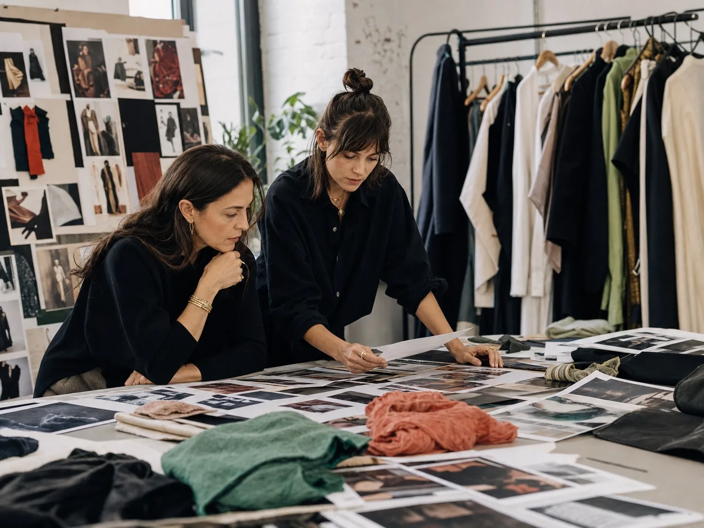

Selling the feeling, not just the view
How Jasmine shaped a creator cohort around visitor intent, visual storytelling, and attraction-specific safety.
Read the storyCampaign stories
See how Jasmine interprets the brief, organizes creator evidence, surfaces risk, and gives brand managers a shortlist they can defend.
These initial stories are illustrative pilot scenarios. New industries and real client results will be added as the library grows.
How Jasmine shaped a creator cohort around visitor intent, visual storytelling, and attraction-specific safety.
Read the story
How Jasmine translated a collection's visual language into distinct, defensible creator roles.
Read the storyHow Jasmine built a launch cohort around demonstrations, user workflows, and credible product understanding.
Read the storyHow Jasmine separated informed practitioners from trend-driven reach and made claim risk visible.
Read the storyHow Jasmine organized local trust, issue credibility, compliance, and safety for a statewide midterm campaign.
Read the story